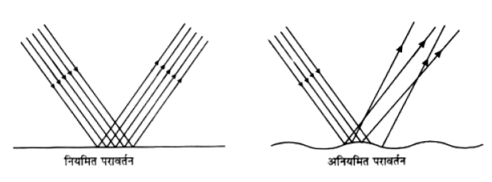
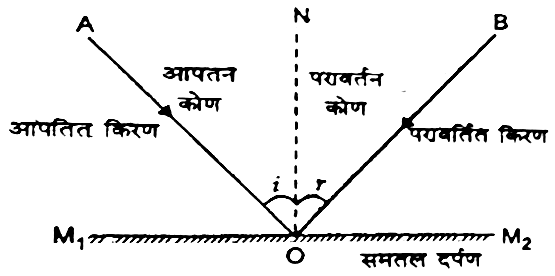
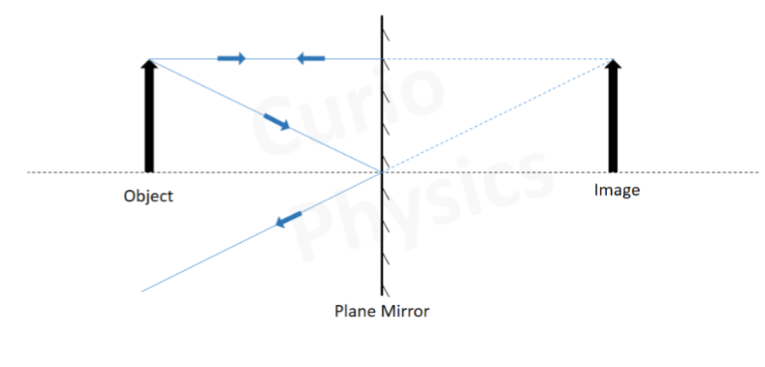
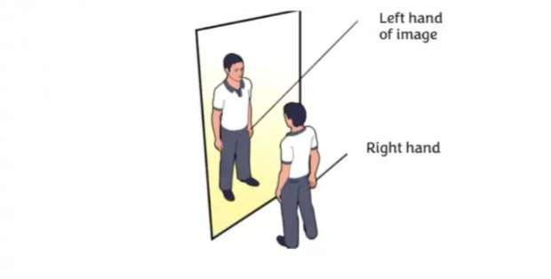
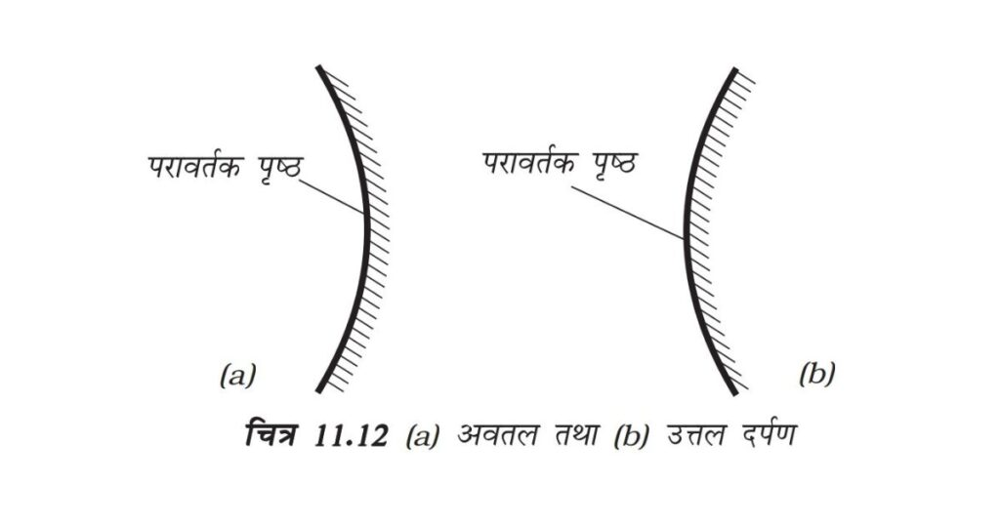
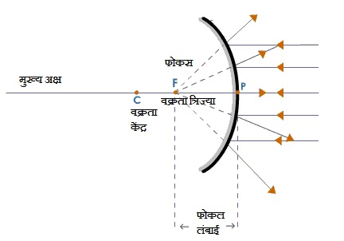
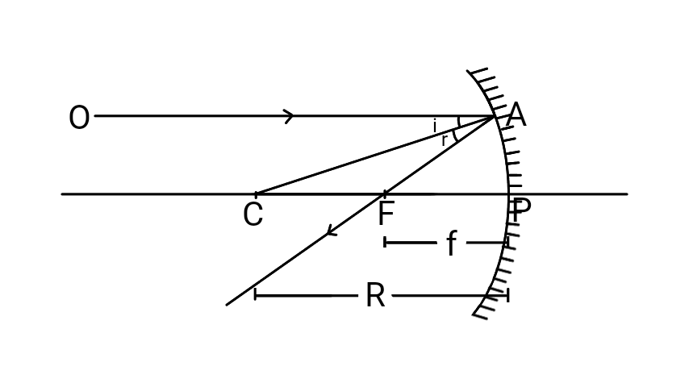
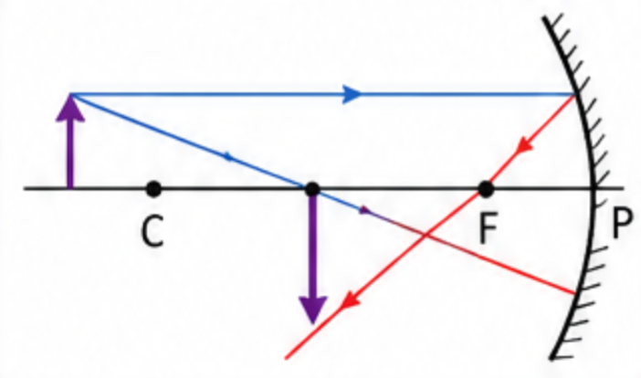
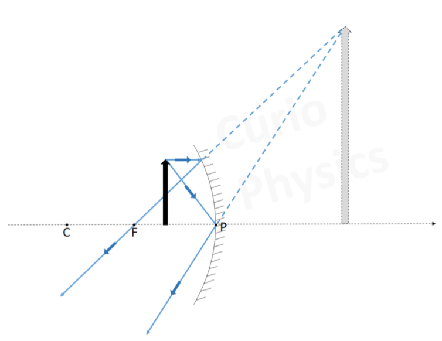
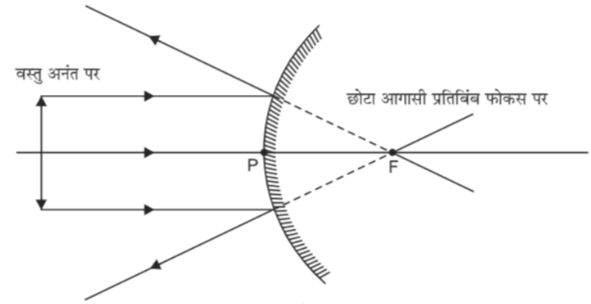

📘 Unit 6(A) - Reflection
Q: What is optics?
The branch of physics under which light energy and phenomena related to light are studied is called optics.
It is of two types —
It is of two types —
- Ray optics.
- Wave optics.
Q: What is reflection? How many types of reflection are there?
When a ray of light strikes a surface and returns back into the same medium, this phenomenon is called reflection.
Types of reflection — Reflection is of two types —
Types of reflection — Reflection is of two types —
- Regular reflection — When parallel incident rays of light produce parallel reflected rays, it is called regular reflection.
Example – reflection of light from a plane mirror. - Irregular (diffuse) reflection — When parallel incident rays of light do not produce parallel reflected rays, it is called irregular reflection.
Example – reflection of light from a wall, road, or paper.

Q: Write the difference between regular reflection and irregular reflection.
| S.No. | Regular reflection | Irregular reflection |
|---|---|---|
| 1. | Parallel incident rays of light produce parallel reflected rays. | Parallel incident rays of light do not produce parallel reflected rays. |
| 2. | It occurs on smooth and plane surfaces. | It occurs on uneven or rough surfaces. |
| 3. | A clear image is formed. | A clear image is not formed. |
| 4. | Example – reflection of light from a plane mirror. | Example – reflection of light from a wall, road, or paper. |
Q: Draw a labelled diagram of reflection from a plane mirror.

- The ray of light falling on the surface of the mirror is called the incident ray.
- The point where the incident ray strikes the mirror is called the point of incidence.
- The ray of light sent back by the mirror is called the reflected ray.
Q: What is the angle of incidence?
The angle made by the incident ray with the normal at the point of incidence is called the angle of incidence. It is denoted by \(i\).
Q: What is the angle of reflection?
The angle made by the reflected ray with the normal at the point of incidence is called the angle of reflection. It is denoted by \(r\).
Q: Write the laws of reflection.
The process of reflection is based on two main laws —
- The incident ray, the reflected ray, and the normal all lie in the same plane.
- The angle of incidence is always equal to the angle of reflection, i.e., \(\angle i = \angle r\)
Q: What is an image? How many types of images are there?
When light rays coming from an object are reflected or refracted by a mirror or lens and reach our eyes, and we perceive the object to be at some other location, an image of the object is formed at that location.
Images are of two types —

Images are of two types —
- Real image: An image that can be obtained on a screen. In this case, the reflected rays actually meet at a point.
Example — the image formed by a concave mirror. - Virtual image: An image that cannot be obtained on a screen. In this case, the reflected rays only appear to meet at a point.
Example — the image formed in a plane mirror.
Q: Draw a labelled ray diagram of the image of an object formed by a plane mirror.

Q: Write the characteristics of the image formed by a plane mirror.
Characteristics of the image formed by a plane mirror –
- The image is virtual, i.e., it cannot be obtained on a screen.
- The size of the image is equal to the size of the object.
- The distance of the image behind the mirror is equal to the distance of the object in front of the mirror.
- The image is erect, but laterally inverted.
- The image and the object are parallel and their transverse axis is the same.
Q: What is lateral inversion?
When an object is placed in front of a plane mirror, its image appears reversed left to right, i.e., the right side of the object appears on the left in the image and the left side appears on the right. This phenomenon is called lateral inversion.
Example: When we stand in front of a mirror, our right hand appears on the left side in the image and our left hand appears on the right side. This is lateral inversion.
Example: When we stand in front of a mirror, our right hand appears on the left side in the image and our left hand appears on the right side. This is lateral inversion.

Q: Write the uses of plane mirrors.
Uses of plane mirrors —
- A plane mirror is used to see oneself.
- Plane mirrors are fitted on dressing tables and in bathrooms.
- Fitting them on the inner walls of shops makes the shop appear larger.
- Plane mirrors are installed at blind turns on busy roads, which helps prevent accidents.
- A plane mirror is used in making a periscope.
Q: What is a spherical mirror? How many types of spherical mirrors are there? (2019/20)
A spherical mirror is a mirror whose reflecting surface is a part of a hollow sphere of glass.
Spherical mirrors are of two types —
Spherical mirrors are of two types —
- Concave mirror - A concave mirror is a spherical mirror in which reflection of light takes place on the concave (inner) surface.
- Convex mirror - A convex mirror is a spherical mirror in which reflection of light takes place on the convex (outer) surface.

Q: Give definitions of the following terms.
- Pole - The centre of a spherical mirror is called its pole. It is denoted by \(P\).
- Centre of curvature (2019) - The centre of curvature of a spherical mirror is the centre of the hollow sphere of glass of which the mirror is a part. It is denoted by \(C\).
- Radius of curvature (2020) - The radius of curvature of a spherical mirror is the radius of the hollow sphere of glass of which the mirror is a part. It is denoted by \(R\).
- Principal axis (2020) - The straight line passing through the centre of curvature and the pole of a spherical mirror is called its principal axis.
- Aperture - The part of the mirror from which reflection of light actually takes place is called the aperture of the mirror.

- Principal focus (2019/24) - The point at which light rays travelling parallel to the principal axis meet after reflection from a concave mirror is called the principal focus of the concave mirror. It is denoted by \(F\). The focus of a concave mirror is real.
- Focal length (2020) - The distance between the pole and the principal focus of a concave mirror is called the focal length of the concave mirror. It is denoted by \(f\). It is always negative.

- Principal focus - The point from which light rays travelling parallel to the principal axis appear to diverge after reflection from a convex mirror is called the principal focus of the convex mirror. It is denoted by \(F\). The focus of a convex mirror is virtual.
- Focal length - The distance between the pole and the principal focus of a convex mirror is called the focal length of the convex mirror. It is denoted by \(f\). It is always positive.

Q: Write the rules for image formation by a concave mirror.
Rules for image formation by a concave mirror —
- When a ray is incident parallel to the principal axis of the mirror, it passes through the principal focus (F) after reflection.
- When a ray is incident on the mirror passing through the principal focus (F), it becomes parallel to the principal axis after reflection.
- When a ray is incident on the mirror passing through the centre of curvature (C), it returns along the same path.
Q: Prove that for a spherical mirror, f = R/2.

Since AB and PC are parallel, therefore
$$ \angle ABC = \angle BCF \quad \text{....(1) (alternate angles)} $$
By the law of reflection of light,
$$ \angle ABC = \angle CBF \quad \text{....(2)} $$
From equations (1) and (2) -
$$ \angle BCF = \angle CBF $$
In a triangle, sides opposite equal angles are equal. Therefore
$$ BF = CF $$
Since \(BF \approx PF\) (when the point is close to P), therefore
$$ PF = CF $$
Adding PF to both sides
$$ PF + PF = PF + CF $$
$$ 2PF = PC $$
$$ 2f = R $$
$$ \boxed{f = \frac{R}{2}} $$
Q: Write the mirror formula and prove it.

\(\triangle ABC\) and \(\triangle A'B'C\) are right-angled. Therefore
$$ \frac{AB}{A'B'} = \frac{BC}{B'C} \quad (1) $$
Similarly, \(\triangle A'B'F\) and \(\triangle MNF\) are also right-angled.
$$ \therefore \frac{MN}{A'B'} = \frac{NF}{FB'} $$
But \(MN = AB\),
$$ \therefore \frac{AB}{A'B'} = \frac{NF}{FB'} \quad (2) $$
Comparing equations (1) and (2),
$$ \frac{BC}{B'C} = \frac{NF}{FB'} $$
Let point M on the mirror be very close to the pole P.
$$ NF = PF \text{ (approximately)} $$
Substituting this value,
$$ \frac{BC}{B'C} = \frac{PF}{FB'} $$
$$ \frac{PB - PC}{PC - PB'} = \frac{PF}{PB' - PF} $$
According to the sign convention
$$ PB = -u $$
$$ PC = -2f $$
$$ PF = -f $$
$$ PB' = -v $$
Substituting the values with signs,
$$ \frac{-u-(-2f)}{-2f-(-v)} = \frac{-f}{-v-(-f)} $$
$$ \frac{-u+2f}{-2f+v} = \frac{-f}{-v+f} $$
$$ (-u+2f)(-v+f) = -f(-2f+v) $$
$$ uv - uf - 2fv + 2f^2 = 2f^2 - fv $$
$$ uv - uf - fv = 0 $$
$$ uf + fv = uv $$
$$ \frac{1}{v} + \frac{1}{u} = \frac{1}{f} $$
Therefore, the mirror formula —
$$ \boxed{\frac{1}{v}+\frac{1}{u}=\frac{1}{f}} $$
Q: Explain, with diagrams, the formation of images by a concave mirror in various positions of the object.
The type of image formed by a concave mirror depends on the position of the object placed in front of the mirror.
- When the object is at infinity - When the object is at infinity from a concave mirror, the image formed is at the focus (F), which is real, inverted, and point-sized.

- When the object is beyond the centre of curvature of the concave mirror - When an object is placed beyond the centre of curvature (C) of a concave mirror, the image is formed between the focus and the centre of curvature, which is real, inverted, and smaller than the object.

- When the object is placed at the centre of curvature of the concave mirror - When the object is placed at the centre of curvature (C) of a concave mirror, the image is formed at the centre of curvature (C), which is real, inverted, and the same size as the object.

- When the object is placed between the focus and the centre of curvature - When the object is placed between the focus (F) and the centre of curvature (C) of a concave mirror, the image is formed beyond the centre of curvature, which is real, inverted, and larger than the object.

- When the object is placed at the focus of the concave mirror - When the object is placed at the focus of a concave mirror, the image is formed at infinity, which is real, inverted, and highly magnified.
(2023 supplementary)

- When the object is placed between the pole and the focus of the mirror - When an object is placed between the pole (P) and the focus (F) of a concave mirror, the image is formed behind the mirror, which is virtual, erect, and larger than the object.

Q: If the lower half of the reflecting surface of a concave mirror is covered with an opaque material, what effect will this have on the image formed by the mirror of an object placed in front of it? Write your answer. (2024)
If the lower half of the reflecting surface of a concave mirror is covered with an opaque material, the image formed by the mirror of an object placed in front of it will remain of full size, but its intensity (brightness) will be reduced by half.
Q: Write the uses of concave mirrors.
Uses of concave mirrors —
- Concave mirrors are used for shaving and applying make-up.
- They are used by dentists to examine teeth.
- Concave mirrors are used in torches, car headlights, and searchlights.
- Concave mirrors are used in solar cookers.
- They are used in reflecting telescopes.
Q: Why is a concave mirror used for shaving?
If an object is placed in front of a concave mirror between its focus and pole, an erect and enlarged image is formed behind the mirror. Thus, by keeping a concave mirror near the beard/face, an erect and enlarged image is formed. This makes shaving convenient.
Q: The mirror used in a searchlight is parabolic, not concave-spherical. Why?
If a light source is placed at the principal focus of a concave mirror, only the rays reflected near the principal axis are parallel to each other; the rays reflected from far away are not mutually parallel. As a result, an intense and wide beam of light cannot be obtained.
All rays reflected from a parabolic mirror, from a light source placed at its principal focus, are mutually parallel. Therefore, using a parabolic mirror produces an intense and wide beam of light.
All rays reflected from a parabolic mirror, from a light source placed at its principal focus, are mutually parallel. Therefore, using a parabolic mirror produces an intense and wide beam of light.
Q: What is conjugate focus? Explain.
On the principal axis of a concave mirror there exist pairs of points such that if an object is placed at one point, its image forms at the other point, and if the object is placed at the other point, its image forms at the first point. Such pairs of points are called conjugate foci.
Q: What is parallax? Explain.
If two objects are placed in line and the relative displacement between them is observed on moving the eye to the right or left, this relative displacement is called parallax. Parallax decreases as the objects are brought closer together.
Q: Write the rules for image formation by a convex mirror.
Rules for image formation by a convex mirror —
- When a ray is incident on a convex mirror parallel to the principal axis, it appears to come from the principal focus (F) after reflection.
- When a ray travels towards the principal focus (F), it becomes parallel to the principal axis after reflection.
- When a ray travels towards the centre of curvature (C), it appears to return along the same direction after reflection.
- A ray incident on the pole (P) of the mirror is reflected following the law of reflection (\(\angle i = \angle r\)).
Q: Explain, with diagrams, the formation of images by a convex mirror in various positions of the object.
The type of image formed by a convex mirror depends on the position of the object placed in front of the mirror.
- When the object is at infinity - When the object is at infinity from a convex mirror, the image formed is at the focus (F) behind the mirror, which is virtual, erect, and point-sized.

- When the object is placed in front of the convex mirror - When the object is placed in front of a convex mirror, the image formed behind the mirror lies between the pole (P) and the focus (F), and is virtual, erect, and smaller than the object.

Q: Write the main characteristics of the image formed by a convex mirror.
The main characteristics of the image formed by a convex mirror are as follows.
- The image of an object formed by a convex mirror is always behind the mirror, between its pole and focus.
- The image formed is smaller than the object, erect, and virtual.
Q: Write the uses of convex mirrors.
The uses of convex mirrors are as follows.
- For viewing behind vehicles (rear-view mirror).
- At road bends and parking areas.
- In shops and security locations.
- In ATMs and banks.
Q: What is linear magnification? Establish the formula for a spherical mirror.
The ratio of the size of the image formed by a mirror or lens to the size of the object is called linear magnification. It is denoted by \(m\).
That is,
That is,
$$ m=\frac{O}{I}=-\frac{u}{v} $$
where —
- \(O\) = height of the object
- \(I\) = height of the image
- \(v\) = image distance
- \(u\) = object distance
Q: Write the sign convention used in mirror formulas for numerical problems.
To solve numerical problems involving concave and convex mirrors, the Cartesian sign convention is adopted for the signs used in mirror formulas. According to this —
- All distances are measured along the principal axis, taking the pole of the mirror as the origin.
- Object distance (u): Always taken as negative (-).
- Image distance (v) and magnification (m):
- If the image formed is real → v and m are negative (-)
- If the image formed is virtual → v and m are positive (+)
- Focal length (f):
- For a concave mirror → f is negative (-)
- For a convex mirror → f is positive (+)
- Height of the object (O):
- Above the principal axis → positive (+)
- Below the principal axis → negative (-)
- Height of the image (I):
- Real image → negative (-)
- Virtual image → positive (+)
Q: Find the focal length of a concave mirror if its radius of curvature is 20 cm. (2024 supplementary)
(The solution/answer to this question is not available in the source.)
Q: An object is placed at a distance of 10 cm from a concave mirror of radius of curvature 15 cm. Find the distance of the image from the pole. (2025 supplementary)
(The solution/answer to this question is not available in the source.)
Multiple Choice Questions (MCQ)
- When a ray of light strikes a reflecting surface and returns, what is this process called?
(A) Refraction
(B) Reflection
(C) Diffraction
(D) Scattering
Answer: (B) Reflection - According to the law of reflection —
(A) \(\angle i \neq \angle r\)
(B) \(\angle i = \angle r\)
(C) \(\angle i + \angle r = 90^\circ\)
(D) \(\angle i = 0\)
Answer: (B) \(\angle i = \angle r\) - In reflection, the incident ray, the reflected ray, and the normal —
(A) lie in the same plane
(B) lie in different planes
(C) are parallel
(D) none of these
Answer: (A) lie in the same plane - What is the size of the image formed in a plane mirror?
(A) Smaller
(B) Larger
(C) Same as the object
(D) Inverted
Answer: (C) Same as the object - For a concave mirror, if the object is placed at infinity, where is the image formed?
(A) At the focus (F)
(B) At the centre of curvature (C)
(C) Between F and C
(D) At the pole (P)
Answer: (A) At the focus (F) - What is the relation between the focal length f and the radius of curvature R of a mirror?
(A) f=2R
(B) f=R/2
(C) f=2R
(D) f=R
Answer: (B) f=R/2 - What is the mirror formula?
- When does a concave mirror form a real image of an object?
(A) When the object is within the focus
(B) When the object is outside the focus
(C) When the object is at the pole
(D) Never
Answer: (B) When the object is outside the focus - The focus of a convex mirror —
(A) is real
(B) is virtual
(C) is at infinity
(D) does not exist
Answer: (B) is virtual - Under what conditions does the mirror formula apply?
(A) For paraxial rays
(B) For any ray
(C) Only for a plane mirror
(D) Only in irregular reflection
Answer: (A) For paraxial rays - What is the formula for magnification?
- If the angle of reflection is 45°, what will the angle of incidence be?
(A) 90°
(B) 45°
(C) 0°
(D) 60°
Answer: (B) 45° - Which line is taken as the reference for measuring angles in reflection?
(A) The surface of the mirror
(B) The normal line
(C) The incident ray
(D) The reflected ray
Answer: (B) The normal line - Reflection is which type of phenomenon?
(A) Wave
(B) Particle
(C) Both
(D) Neither
Answer: (A) Wave - When light is reflected from a rough surface, it is called —
(A) Regular reflection
(B) Irregular reflection
(C) Diffraction
(D) Refraction
Answer: (B) Irregular reflection
True / False
- In reflection, the incident and reflected rays do not lie in the same plane. — False
- The focus of a concave mirror is real. — True
- The image formed in a plane mirror is real. — False
- The law of reflection also applies to refraction. — False
- A convex mirror is used for viewing behind vehicles. — True